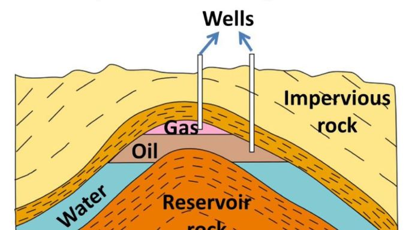

Usable petroleum can be drawn out from beneath the earth's surface from a designated area in many different ways with varying possibilities of the quality and resource amount from the extraction.
Conventional oil is extracted from underground reservoirs using traditional drilling and pumping methods. Conventional oil is a liquid at atmospheric temperature and pressure, so it can flow through a wellbore and a pipeline – unlike bitumen (oil sands oil) which is too thick to flow without being heated or diluted.
